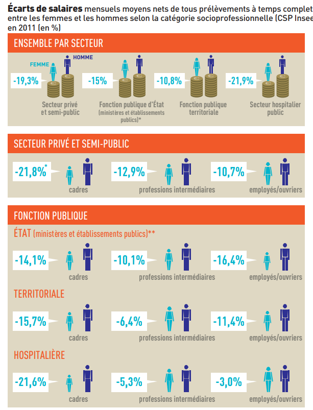
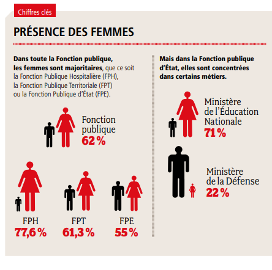
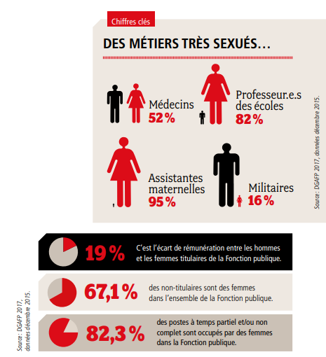
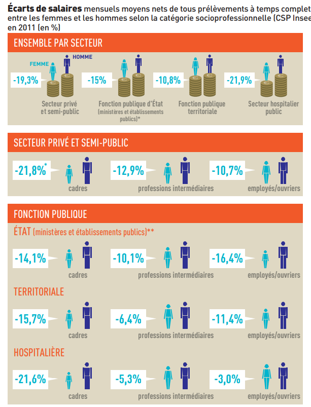
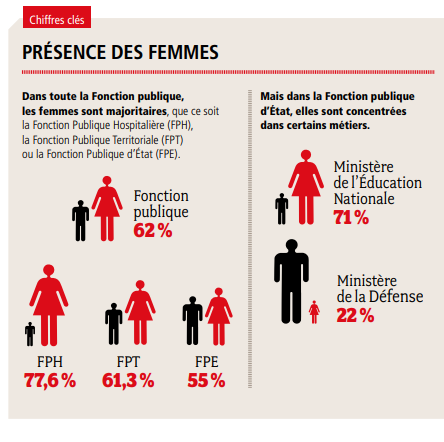
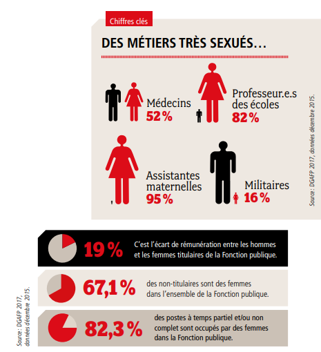

Égalité Professionnelle : Analyse, Sensibilisation et Pistes d'Action

 





Genre et travail
- Categorie: égalité homme femme
- Pour: :Conservatoire national des arts et métiers
Introduction :
Dans le cadre de mes études, j'ai engagé un projet d'envergure visant à sensibiliser et à lutter activement contre les inégalités persistantes entre les femmes et les hommes au sein du monde professionnel.
Cette initiative s'inscrit dans une démarche pédagogique engagée, ayant pour objectif principal d'éclairer les participants sur les multiples facettes des inégalités de genre.
Au travers de cette sensibilisation, nous aspirons à susciter une prise de conscience collective quant à l'ampleur de ce défi sociétal, tout en offrant des solutions concrètes et pragmatiques pour favoriser l'égalité au sein des organisations.
Notre engagement repose sur la conviction que la diversité des genres est une richesse, et que la promotion de l'égalité homme-femme constitue un levier essentiel pour le progrès social et économique. Ainsi, cette initiative se veut être un catalyseur de changement, encourageant la réflexion et l'action en faveur d'un monde professionnel équitable et inclusif.
Objectifs pédagogiques
Les objectifs de cette initiative éducative sont multiples. Il s'agit tout d'abord de sensibiliser les participants à la question des inégalités de genre, en mettant l'accent sur leur présence dans tous les aspects du monde professionnel. La compréhension des fondements de ces inégalités, élaborées à travers la socialisation différenciée des sexes, constitue une étape essentielle.
En outre, l'étude vise à démontrer comment ces inégalités persistent dans l'ensemble de la société et du monde du travail. En fournissant des pistes d'action concrètes, le projet aspire à rendre les organisations plus respectueuses de l'égalité entre les femmes et les hommes.
L'enseignement déployé dans ce projet est conçu pour élargir les compétences de tous les participants, indépendamment de leur situation de travail ou de leur spécialité professionnelle. Il vise particulièrement à sensibiliser les décideurs, les responsables des ressources humaines, les responsables opérationnels, les élus du personnel, les syndicats et les salariés à l'égalité professionnelle et à la mixité.
L'engagement de cette étude s'étend au-delà de la sensibilisation, cherchant à contribuer activement à la mise en œuvre de politiques d'égalité professionnelle et de programmes de lutte contre les discriminations au sein des organisations, en particulier au Ministère de la Culture.
Étapes de réalisation de l'étude :
- Définition des Objectifs :
- Identification précise des objectifs pédagogiques et des résultats attendus.
- Recherche Documentaire :
- Analyse approfondie des études existantes, des statistiques et des rapports sur les inégalités femmes-hommes dans le contexte professionnel.
- Conception des Supports Pédagogiques :
- Élaboration de supports pédagogiques interactifs et informatifs adaptés à différents publics.
- Sensibilisation des Participants :
- Mise en œuvre de sessions de sensibilisation, ateliers et conférences pour divers acteurs au sein du Ministère de la Culture.
- Élaboration de Pistes d'Action :
- Identification et formulation de recommandations concrètes pour promouvoir l'égalité professionnelle.
- Évaluation de l'Impact :
- Mesure de l'impact de la sensibilisation et des actions proposées, ajustements éventuels.
- Rapport Final :
- Compilation des résultats, des enseignements tirés et des recommandations dans un rapport final.
- Diffusion et Partage :
- Intégration des résultats dans des publications, présentations, et partage avec la communauté académique et professionnelle.
Ce projet constitue une démarche proactive visant à transformer les mentalités et les pratiques, contribuant ainsi à la construction d'un environnement professionnel plus équitable et inclusif.